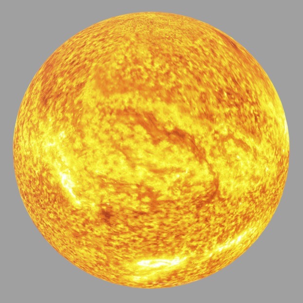
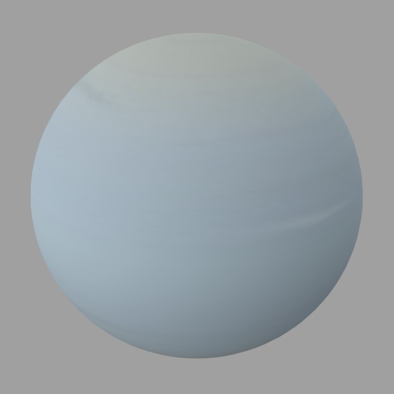

太陽
太陽系の中心にある恒星で、水素を核融合しエネルギーを放出。生命や気候を支える源。
3D View
水星
太陽に最も近い惑星で、小型で大気がほぼなく、極端な温度差が特徴。
3D View
金星
厚い二酸化炭素の大気に覆われ、温室効果で非常に高温。地球と似たサイズ。
3D View
地球
水と生命が存在する唯一の惑星。適度な気温と酸素豊富な大気を持つ。
3D View
火星
太陽に最も近い惑星で、小型で大気がほぼなく、極端な温度差が特徴。
3D View
木星
厚い二酸化炭素の大気に覆われ、温室効果で非常に高温。地球と似たサイズ。
3D View
土星
美しい環を持つガス惑星。主に水氷と岩で構成された環が特徴的。
3D View

天王星
青緑色の氷巨星で、自転軸が横倒し。主に氷とガスで構成される。
3D View
木星
青い氷巨星で、強風と暗い斑点が特徴。太陽系の最外縁惑星。
3D View
月
地球の唯一の衛星で、地球に引力の影響を与え潮汐を生む。表面はクレーターが多く、水は少量存在。
3D View